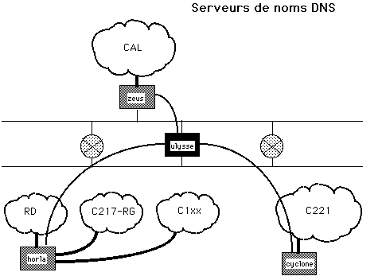
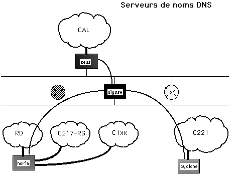

domain enst.fr nameserver 137.194.2.81 nameserver 137.194.2.16
horla.enst.fr. IN A 137.194.160.21
IN MX 10 inf.enst.fr.
IN MX 50 enst.enst.fr.
21.160.194.137 IN RR horla.enst.fr.
 

 Retour au Plan
Philippe Dax / dax@inf.enst.fr
Retour au Plan
Philippe Dax / dax@inf.enst.fr